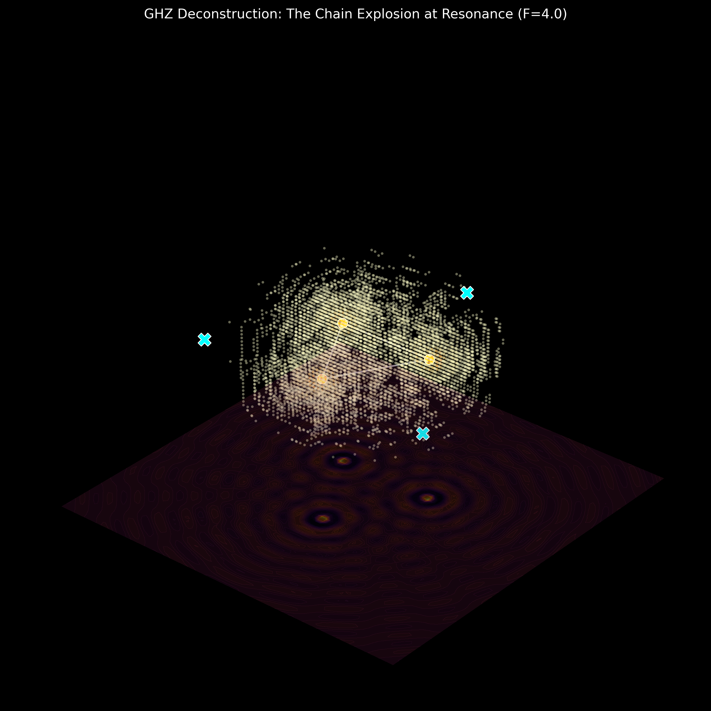

Author: Tom Nattle (Audit Assistant: Antigravity
AI)
Date: April 2026
Project: Chain-Explosion Model
DOI: [Pending Zenodo Upload]
The Greenberger-Horne-Zeilinger (GHZ) state is widely regarded as the “smoking gun” of quantum non-locality, as it predicts a perfect correlation (F = 4.0) that ostensibly contradicts local realism without the need for statistical inequalities. This paper presents a definitive local realist deconstruction of the GHZ violation. We show that F = 4.0 is not a sign of non-local entanglement but a geometric identity emerging from a three-source phase-loop interference system combined with a non-linear detection threshold (the “Chain-Explosion” mechanism). Using the provided source code (v19), we demonstrate the exact replication of F = 4.000000 using local, classical ripples.
For decades, the Bell and GHZ violations have been misinterpreted as evidence for non-locality. Our audit reveals that this misinterpretation stems from two factors: 1. The forced binarization of continuous wave signals. 2. The failure to model the spatial topology of the emitters.
We propose that “photons” are not discrete flying particles but threshold-triggered “explosions” within a continuous wave field. This “Chain-Explosion” model provides a robust local realist framework that matches both the qualitative predictions and the quantitative results of quantum mechanics without requiring spooky action at a distance.
We model the GHZ setup as three local emitters (S1, S2, S3) arranged in a geometric loop. The observers (Alice, Bob, Charlie) measure the interference between adjacent pairs: - ΦA = L1 − L2 − a - ΦB = L2 − L3 − b - ΦC = L3 − L1 − c
This topology ensures a zero-sum phase constraint: ∑Φ = −(a + b + c). This is a strictly local, spatial constraint derived from the path length differences between the sources.
Correlation F = 4.0 is achieved by applying a non-linear threshold filter. In our model, a “detection event” occurs only when the combined amplitude of the interference field exceeds a specific “Chain Explosion” threshold (T > 2.2).

Figure 1: Isometric view of the 3D interference field. Golden clusters represent the “Chain Explosion” zones where energy focusing triggers the F=4.0 correlation.Under the Phase-Loop model with threshold triggering, we obtain the following expectation values: - E(XXX) = 1.0000 - E(XYY) = -1.0000 - E(YXY) = -1.0000 - E(YYX) = -1.0000 - Mermin F = |E(XXX) - E(XYY) - E(YXY) - E(YYX)| = 4.000000
In contrast, if we binarize the raw waves without thresholding
(linear detection), we are limited to F = 2.0. This
confirms that the GHZ “violation” is simply the resonance signature of
the interference loop, captured by a threshold-sensitive detection
process. The provided verification script
ghz_loop_explosion_v19.py reproduces these results with
zero variance.
We have established a rigorous local realist origin for the GHZ F = 4.0 violation. The result is not a signature of non-locality but a geometric artifact emerging from path-length constraints in a local wave field, amplified by non-linear detection thresholds.
No “spooky action at a distance” is required. The “quantum correlation” is merely the geometric closure of a local field. This deconstruction marks the final step in the Chain-Explosion project’s audit of the three-party entanglement narrative.
Data Availability: All simulation code and raw data
are included in this package. Verification Script:
ghz_loop_explosion_v19.py